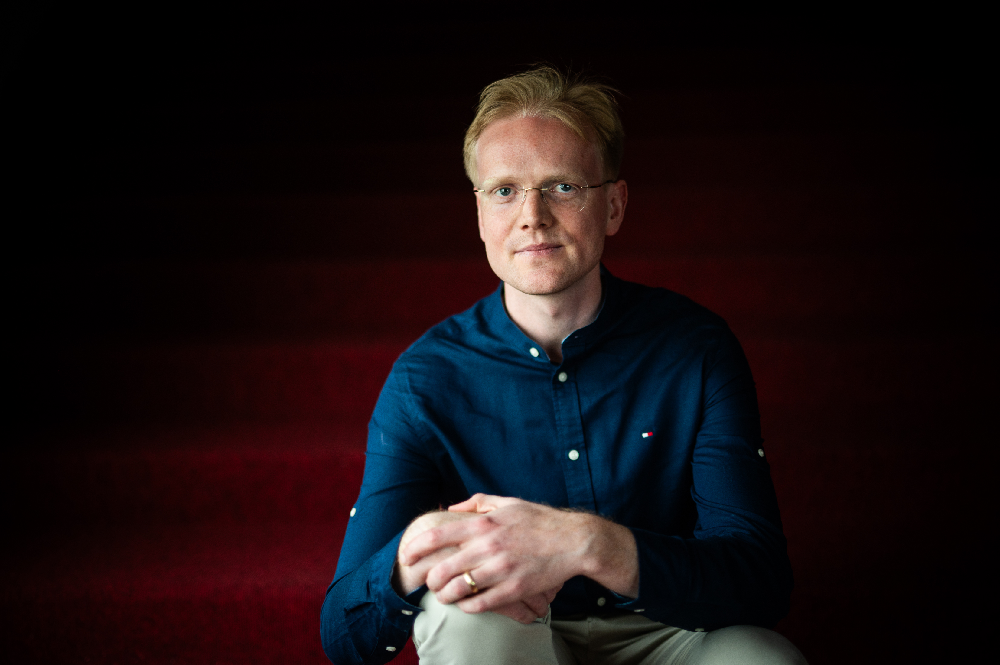

Over

Robin van Doorn (36) woont in Groningen met zijn vrouw, hun dochter en kat, die doorgaans weinig belangstelling voor zijn verhalen toont.
Tijdens zijn studie Geschiedenis droomde hij ervan om historische boeken te schrijven. Na zijn studie verschoof zijn aandacht en hervond hij zijn liefde voor speculatieve fictie. Voor zijn verhalen laat hij zich inspireren door mythologie, folklore en geschiedenis.
In 2024 werd zijn eerste publicatie bekroond met de Walkure Award, een prijs voor fantastische literatuur. Een jaar later behaalde hij de tweede plaats bij de publieksprijs van EdgeZero, waarna hij in 2026 opnieuw de Walkure Award won.
Robin groeide op in Drenthe, studeerde in Groningen en keerde na enkele omzwervingen terug naar de stad waar hij zich thuis voelt.